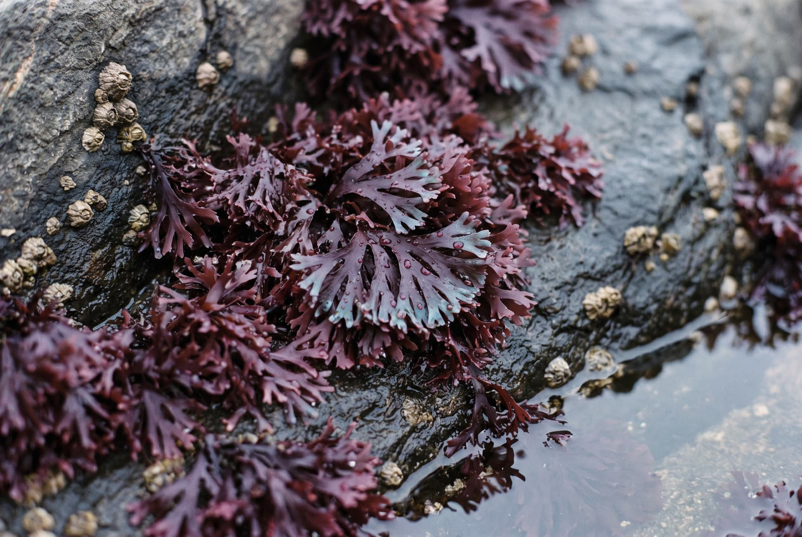
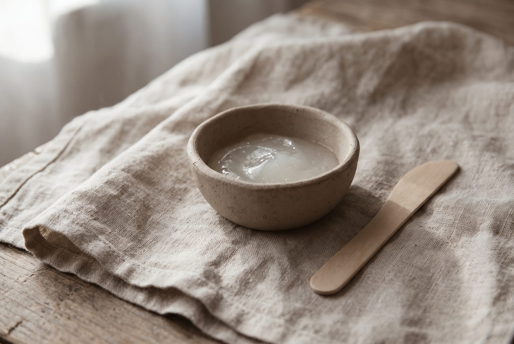
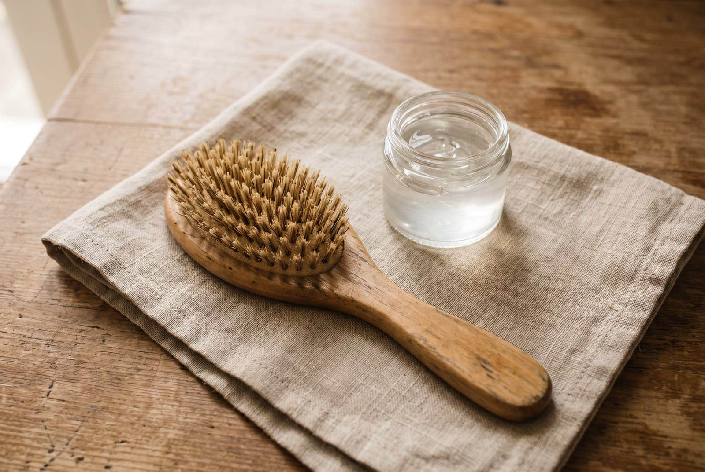

Sea moss · Product notes
One alga, water, and a drop of oil.
The plain Chondrus crispus gel has three things in it and I can name all three. This is what is in the jar, how it differs from Northern Soul, why there is an oil in a seaweed gel, what people do with it on their skin and hair, and why it gets 28 days rather than a shelf life.
By Reiss Davies Ausar6 September 20268 minute read

Two of the jars in my fridge are made from the same plant. Northern Soul is the one with the rest of the shore in it, four algae from three families, and it is the jar most people leave with. The other one is this: Chondrus crispus and nothing else, prepared with water, with a drop of Omega DHA oil in it.
People ask me which of the two they should have, and the honest answer is that it depends on how much you want in the jar. This article is about the plain one, because it is the one I get the most questions about.
01What is actually in the jar
Three things.
- Chondrus crispus. The cold-water red alga, wild harvested off Atlantic rock at low tide. Flat forking fronds, thin enough to see light through, drying anywhere from purple to nearly black. This is the plant the old herbals call carrageen, and it is the original Irish moss.
- Water. The seaweed is soaked and blended with it. Nothing is taken out and nothing is put back in.
- Omega DHA oil. The same oil we sell in a bottle at £19.99, blended at six parts omega 3 to one part omega 6.
There is no preservative, no sweetener, and no thickener beyond the seaweed itself, which would be an odd thing to add anyway, since the seaweed is what makes the gel thick. That short list is the whole point of this jar, and it is why I keep making it alongside the blended one.

If you want the difference between Chondrus crispus and the warm-water Eucheuma cottonii that most sea moss in this country actually is, I have written that out at length in Which sea moss?, along with how to tell them apart in a bag. I will not repeat it here.

02How it differs from Northern Soul
Same base plant, different jar. Here is every difference I can put on paper.
| Algae | Chondrus Crispus: one, Chondrus crispus. Northern Soul: four, from three families, being Chondrus crispus, Fucus vesiculosus, Laminariales and Chlorella. |
|---|---|
| Added | Chondrus Crispus: Omega DHA oil. Northern Soul: nothing beyond the four algae and the water. |
| Price and size | Chondrus Crispus: £34.99, one jar, no volume printed on the listing. Northern Soul: £34.99 for 300 ml, £50.00 for 500 ml. |
| Serving | Both: one tablespoon in the morning, on an empty stomach. |
| Storage | Both: fridge, 28 days once opened, or freeze. |
| On skin and hair | Chondrus Crispus is the one people use that way. I would use the single-ingredient jar for it rather than the four-alga one. |
| Vegan mark | Northern Soul carries one, being algae and water. This jar does not, because the source of the Omega DHA oil is not stated on the listing and I will not guess at it. |
| Iodine figure | Both are seaweed gels and the iodine varies with the harvest, so neither carries a printed figure. Seaking, the capsule, is the one with a measured figure: 75 µg each. |
If you are new to this and you want to know exactly what you have taken, take the plain one first. If you have been taking sea moss for a while and want the shore rather than the species, Northern Soul is the jar.

Three ingredients is not a marketing position. It is just what is in it.
03The oil, and the sentence I am not going to write
There is an oil in a seaweed gel and you are entitled to ask why.

The reason printed on the old listing is a claim, and it is not one I am permitted to repeat under the rules I trade under. I could write a different reason that sounds plausible and is not testable. I would rather not, so here is what I can tell you instead, and it is all specification.
- The oil is Omega DHA Oil. We sell it separately in a bottle at £19.99, and that bottle is a month at a tablespoon a day.
- It is blended at six parts omega 3 to one part omega 6.
- The amount of it in a jar of gel is not printed on the listing. So I do not print one either, and you should not read this jar as a way of taking omega oil. If that is what you want, buy the bottle, where the serving is measured.
04How I take it
One tablespoon first thing, before I have eaten anything, straight off the spoon and then a glass of water.

If the texture defeats you, and it does defeat some people, stir it into a warm tea with a spoonful of raw honey until it dissolves, or blend it into a smoothie, where it will thicken things slightly. It also goes into soup, blended in at the end rather than boiled.
One spoonful is the serving. If you missed yesterday, do not take two today. Seaweed carries iodine, and iodine is one of the few nutrients where more is a genuine problem rather than a waste of money.
05What people do with it on skin and hair
I need to be careful here, so read the next sentence as written. What follows is a description of what customers do with this jar. It is not a claim about what the gel does to skin or hair, and I am not making one.
They use it as a face mask or a hair mask. On for up to an hour, then rinsed off with water only, no soap, and patted dry with a towel rather than rubbed. That is the whole method, and it is the method printed on the listing.

Three things worth saying about it, none of which are on the listing and all of which I would say across the counter.
- It is sold as a food. This jar is not registered as a cosmetic, and I am not going to market it as one. You are putting a food on your face, which people have done for a very long time, and the responsibility for that sits with you.
- Try a little on the inside of your wrist first and leave it a day. People react to all sorts of things, and a wrist is easier to live with than a face.
- Work from a bowl, not the jar. Spoon out what you need. Anything that has touched skin or hair should not go back in, or you will be throwing the jar away well before the 28 days are up.

If you have a skin condition of any kind, or you are under a dermatologist, ask them rather than me. I sell seaweed, and I have not seen your skin.
06Twenty eight days
The jar gets 28 days in the fridge once it is opened, or the freezer if you will not finish it in that time. That is the number on the listing and it is the number I stand behind.

The reason it is 28 days and not a year is the ingredient list further up. There is no preservative in it. A wet, mineral-bearing gel with nothing added to keep it is a fresh food, and it wants a fridge, a clean dry spoon and the lid back on. Why a gel goes thin, sour or fizzy, and the order I would check the causes in, is set out in Which sea moss?, and it applies to this jar exactly as it does to the blended one.
One thing specific to this one: if you are also using it on your face, you will get through it faster than a spoon a day, and the jar has no volume printed on it, so I cannot tell you how many days of both it holds. Freeze half the day it arrives if you plan to do both.
07Who should not take it
The same list as every seaweed on my shelf, because the reason is the iodine and this jar is seaweed.
- Overactive thyroid. If you have hyperthyroidism, sea moss is not for you.
- Thyroid medication of any kind. Talk to your GP or pharmacist first. If they are happy for you to take it, the capsules are the better form, because the dose is known.
- Pregnant or nursing. Iodine needs change in pregnancy. Ask your midwife or GP before you start.
- Children. It is not for them, so keep it out of their reach.
- On your skin. Patch test on the wrist first, keep it out of your eyes, and if you have a skin condition, ask the person treating it.
None of this is medical advice. It is the list of questions I ask across the counter before I sell anyone a jar, and I would ask you the same ones.
08Which jar
Four things on the shelf are relevant to this article. This is how I would choose between them.

Chondrus Crispus
£34.99The jar in this article. One alga, water and Omega DHA oil, in glass. The one people use on skin and hair as well.
Add to bag
Northern Soul
from £34.99The same plant, with the shore in it. Four algae from three families. 300 ml or 500 ml, in a glass jar.
Choose a size
Seaking
£39.99The one with a measured figure. 50 capsules at 800 mg, 75 µg of iodine in each. For travelling, or if you need to count.
Add to bag
Purple Mwani
£24.99The warm-water species, sold as what it is. Eucheuma cottonii from Tanzania, where we visited the farms in 2020.
Add to bagIf you are still not sure which of the two gels you want, come into the shop on Smithdown Road, Tuesday to Sunday, and I will open both and let you look at them.

Reiss Davies Ausar
Founder and formulator at Herbase. Trading online since 2019 and behind the counter at 599 Smithdown Road, Liverpool, since August 2024. Author of three books on herbal practice. Book an hour with him if you want to go into more detail.